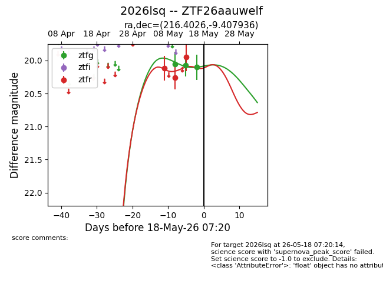
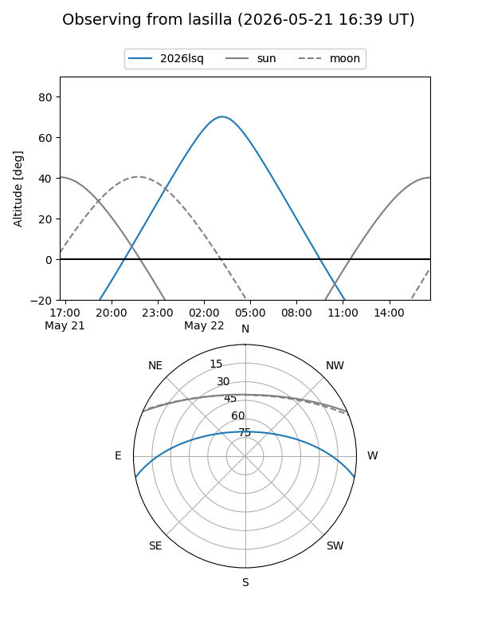
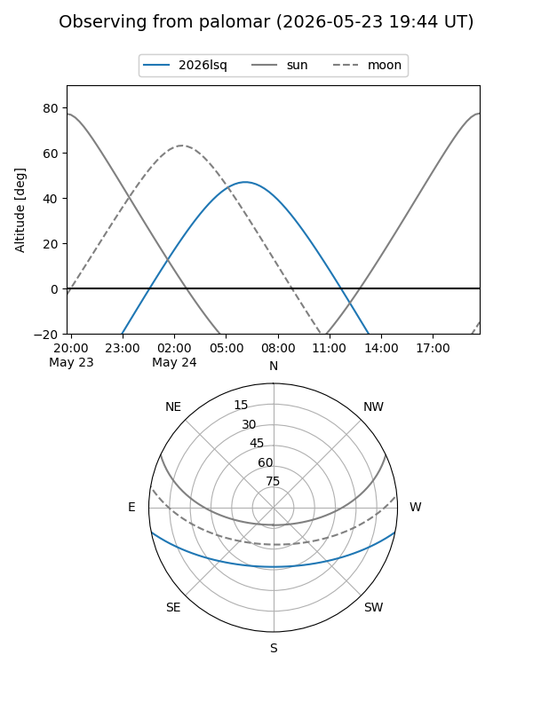
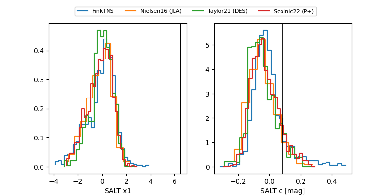

2026lsq
Target 2026lsq at 2026-05-18 07:21
Aliases and brokers:
FINK: link
Lasair: link
ALeRCE: link
TNS: link
YSE: link
alt names
ZTF26aauwelf (ztf,fink_ztf)
2026lsq (tns,yse)
Coordinates:
equatorial (ra, dec) = 216.4026,-9.40794
equatorial (HMS+DMS) = 14:25:36.62,-09:24:28.57
galactic (l, b) = (338.1677,+46.91948)
Flags:
Photometry:
last ztfg=20.10, ztfr=19.95
3 ztfg, 3 ztfr detections
Lightcurve

Visibility


Additional plots
